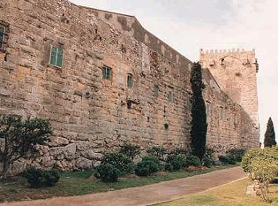
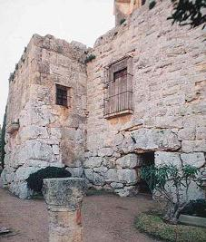
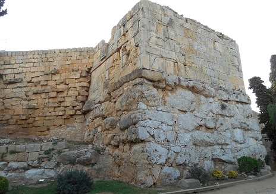
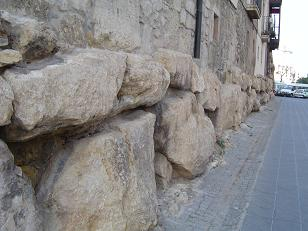
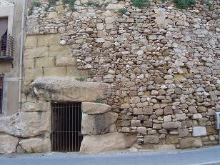
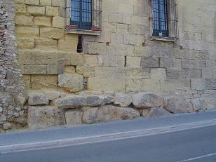

|
Se supone que la primera muralla de la Tarraco romana consistiría en una simple
empalizada de madera. El hecho que rápidamente el núcleo se convirtiera en
cabeza de puente para la llegada de refuerzos desde Roma se tradujo ubarnísticamente en la necesidad de llevar a cabo un fortalecimiento de las
defensas existentes hasta ese momento. Entre el 217 y el 197 a.e.c. se levantó la
primera muralla de piedra.
Es la
construcción arquitectónica romana más antigua de todas las que se conservan
fuera de Italia. Entre los siglos XVI y XVII se reforzaron con bastiones, la
falsa braga y los fortines exteriores para adaptarla al ataque de la artillería.
|
Esta primera muralla disponía también de varias torres, de las
que se conservan tres: Torre del Arzobispo, que conserva la parte
inferior romana, construida con grandes bloques de piedra.

Ver:
Murallas
Romanas
|
Torre del Cabiscol cuyo cuerpo principal se construyó con grandes
bloques irregulares de piedra, pero a diferencia de la muralla, las torres
tenían un cuerpo superior construido con grandes sillares. Esta parte superior
de sillares se conserva en la Torre y al lado también se conserva una de las
puertas llamadas ciclópeas, por el tamaño de sus sillares.

|
|
La Torre de Minerva
al igual que las otras dos torres es del siglo III a.e.c. Tiene un cuerpo
principal de grandes bloques y un cuerpo superior de sillares almohadillados.
En la parte superior de la torre se observa parte del relieve de
la diosa Minerva, del que se conserva toda la parte inferior.
La presencia de los relieves de cabezas humanas y de la efigie de
un lobo son una muestra de la asimilación de elementos etruscos o íberos en la
tradición romana.
La construcción de la muralla se inició a finales del siglo III
a.e.c y se prolongó su construcción a lo largo del siglo II a.e.c.
La parte más antigua de la muralla se construyó a finales del
siglo III a.e.c. y se caracteriza por estar construida con grandes bloques de
piedra irregular con una altura de unos 6 metros aproximadamente. Su
estructura se componía de un muro exterior y un segundo muro paralelo, el muro
interior, además de un relleno de tierra y piedras entre ambos muros. El ancho
de la muralla, en esta primera fase era de unos 4’5 metros, aproximadamente.
En un sillar del interior de la torre se descubrió un grafito en
latín arcaico, dedicado a la Diosa y considerado como la inscripción latina más
antigua fuera de Italia. La otra característica de esta torre consiste en una
serie de relieves esculpidos en los grandes bloques de piedra que reproducen
cabezas de personas que representarían a los enemigos vencidos. |
 |



La segunda fase de la muralla se caracteriza por una parte
inferior de grandes bloques de piedra, opus siliceum y una superior de sillares
almohadillados, bloques cuadrangulares de los que como si se tratase de un
cojín, sobresale la parte central. Esta segunda fase se sitúa cronológicamente a
mediados del siglo II a.e.c. Sus dimensiones son mayores llegando a alcanzar una
altura de 12 metros y una anchura de 6. La estructura interna es similar. De
esta segunda fase se conservan diferentes puertas llamadas ciclópeas debido a
las grandes dimensiones de los bloques de piedra utilizados. En este lienzo de
muralla se puede observar que en los sillares almohadillados hay esculpidas
diferentes marcas que se corresponden con el alfabeto íbero. Se consideran
marcas realizadas por los grupos de picapedreros que trabajaban en la
construcción de la muralla. La totalidad de la muralla es de época romana.
Tarraco se convirtió en colonia romana en tiempos de Augusto, en
esta época el perímetro de la muralla llegaba hasta el puerto con una longitud
aproximada de 4,5 km.
Actualmente sólo se conservan unos 1.100m del trazado que rodea la parte alta
de la ciudad.
|